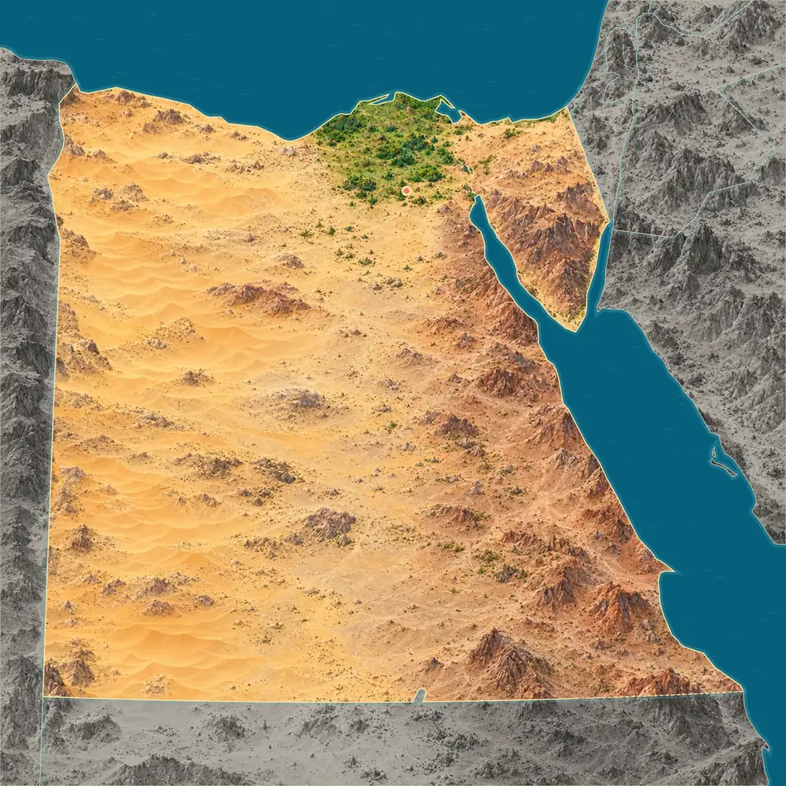
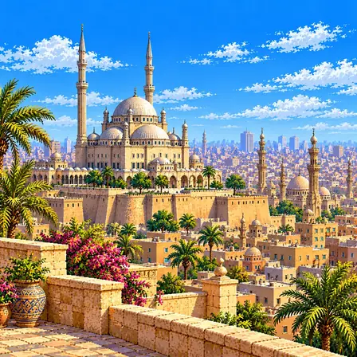
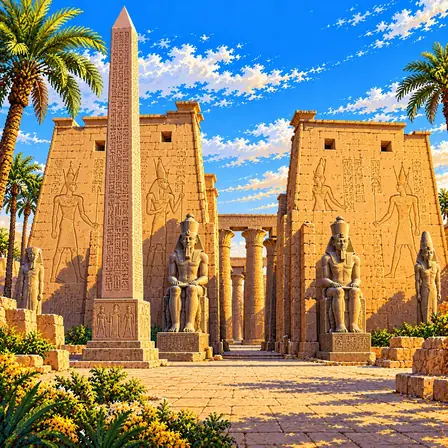
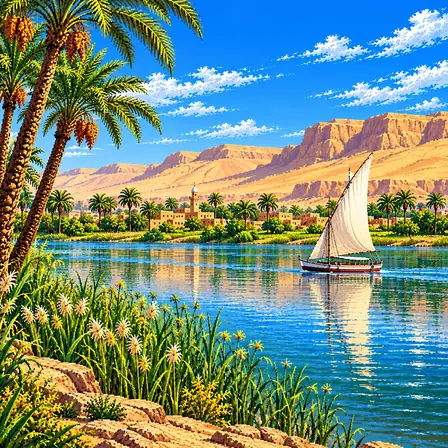
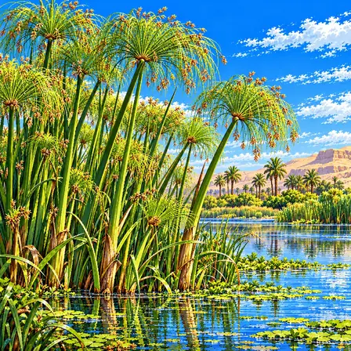
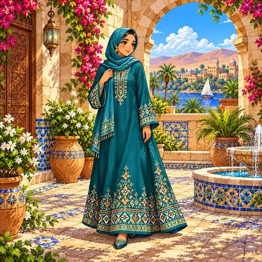
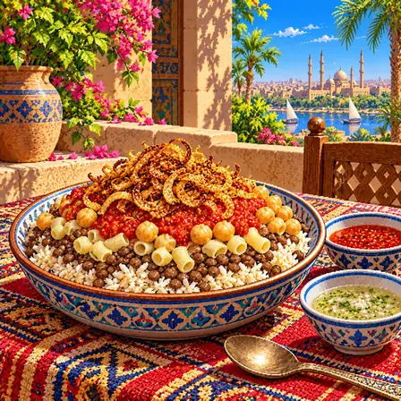
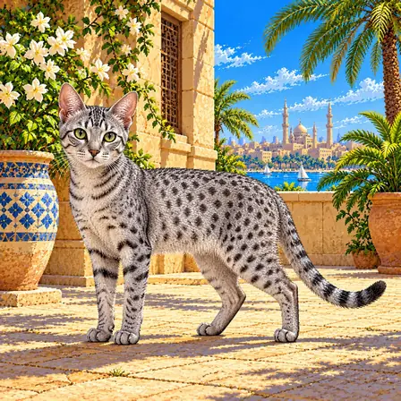
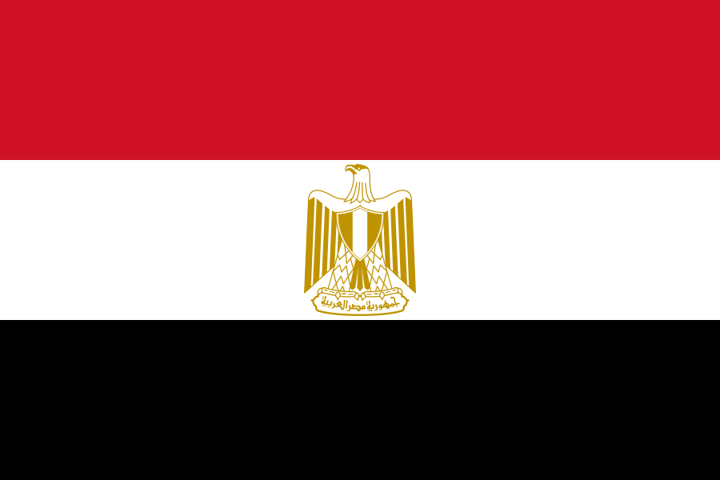

사막 속의 초록 띠
나일강 골짜기와 삼각주는 이집트 땅의 5%도 안 되지만, 이집트 사람의 약 97%가 이곳에 살아요. 강물 덕분에 사막 한가운데에서도 농사를 짓고 도시를 이룰 수 있었어요.

이집트는 땅 대부분이 사막이에요. 사람들은 대부분 나일강을 따라 살고, 강이 바다와 만나는 북쪽에 넓은 초록 땅이 있어요.
이집트는 서쪽의 모래 사막과 동쪽의 메마른 산지 사이를 나일강이 남에서 북으로 흘러, 지중해 앞에 넓은 삼각주를 만들어요. 동쪽에는 홍해의 두 갈래 만 사이에 산이 많은 시나이반도가 있어요.
나일강 골짜기와 삼각주는 이집트 땅의 5%도 안 되지만, 이집트 사람의 약 97%가 이곳에 살아요. 강물 덕분에 사막 한가운데에서도 농사를 짓고 도시를 이룰 수 있었어요.
남서쪽 그레이트샌드시에는 북쪽에서 부는 바람이 쌓은 긴 모래 언덕이 줄지어 있어요. 언덕은 둘레 땅보다 20~30m 높고, 1.5~2.5km 간격으로 나란히 늘어서 있어요.
출처: NASA Earth Observatory, Linear Dunes, Great Sand Sea, Egypt
나일강은 북쪽으로 흘러 지중해와 만나는 곳에서 여러 갈래로 나뉘며 흙을 쌓아 넓은 삼각주를 만들었어요. 수도 카이로는 삼각주가 시작되는 곳 가까이에 있어요.
홍해의 북쪽 끝은 수에즈만과 아카바만 두 갈래로 나뉘고, 그 사이에 시나이반도가 있어요. 시나이반도는 아프리카와 아시아 사이에 놓인 땅이에요.
출처: NASA JPL, Sinai Peninsula, Shaded Relief and Colored Height
시나이반도는 아프리카와 아시아가 서로 멀어지면서 생긴 땅이에요. 홍해의 두 갈래 만을 따라 땅이 갈라지고 늘어나며 내려앉고 있어요.
출처: NASA JPL, Sinai Peninsula, Shaded Relief and Colored Height
서쪽 사막의 와디 알히탄(고래 계곡)에서는 약 4,000만 년 전 바다에 살던 초기 고래의 화석이 나와요. 뒷다리가 아직 남은 고래도 있어, 고래가 땅에서 바다로 옮겨 간 과정을 보여 줘요. 2005년 유네스코 세계유산이 됐어요.
출처: UNESCO, Wadi Al-Hitan (Whale Valley) · IUGS, Whale Valley, Cetacea and Sirenia Eocene fossils of Wadi Al-Hitan
이집트에서 잘 알려진 도시, 역사유산, 자연, 식물, 문화, 음식, 동물, 인사말, 국기를 한 장씩 그렸어요.

카이로는 이집트의 수도예요. 아프리카에서 가장 큰 도시예요. 도시 가까이에 4,500년쯤 된 피라미드가 있어요.
카이로는 이집트의 수도로 광역권에 2,000만 명이 넘게 사는, 아프리카에서 손꼽히게 큰 도시예요. 969년 파티마 왕조가 '알 카히라(정복자)'로 건설했으며, 당시 도시 계획과 미로 골목 구조가 구시가지에 보존되어 유네스코 세계문화유산이에요. 도시 경계가 사막과 나일강 사이에 끼여 있으며, 외곽에 기원전 2600년대 기자 피라미드가 있어요.

룩소르 신전은 나일강 옆에 있는 아주 오래된 신전이에요. 3,000년도 더 전에 지었어요. 커다란 돌기둥과 뾰족한 돌탑이 남아 있어요.
룩소르 신전은 나일강 동안에 자리한 고대 이집트 신전이에요. 기원전 1400년경 아멘호텝 3세가 건설하고 람세스 2세가 대규모 증축했어요. 원래 두 개였던 오벨리스크 가운데 하나는 이집트가 프랑스에 선물해 1836년부터 파리 콩코르드 광장에 서 있어요. '세계 최대 야외 박물관' 룩소르의 핵심 유적으로, 신전 안에는 훗날 그 위에 지은 이슬람 사원(아부 알하자그 모스크)도 함께 남아 있어요.

나일강은 세계에서 가장 긴 강이에요. 사막 한가운데를 지나 바다로 흘러가요. 옛날 이집트 사람들은 강가의 기름진 땅에서 농사를 지었어요.
나일강은 길이 약 6,650km로 세계 최장 강이에요. 동아프리카 빅토리아 호수에서 발원해 사막을 가로질러 지중해로 흘러요. 매년 7~10월 범람으로 쌓이는 비옥한 충적토가 5,000년 이집트 문명의 근간이 됐어요. 고대 이집트인들은 이 범람 주기를 천문 관찰로 예측했으며, 이것이 달력과 수학 발전으로 이어졌어요.

파피루스는 강가 물가에서 자라는 키 큰 풀이에요. 옛날 이집트 사람들은 이 줄기로 종이 같은 것을 만들어 글을 썼어요. 영어 'paper(종이)'라는 말도 파피루스에서 왔어요.
파피루스는 나일강 유역 습지에서 자라는 수생식물이에요. 고대 이집트에서는 파피루스 줄기를 얇게 잘라 엮고 눌러 말려 기록 재료를 만들었어요. 종이의 영어 단어 paper도 파피루스에서 유래했어요. 이집트 상형문자와 문명의 발전에 없어선 안 될 식물이에요.

갈라베야는 발목까지 내려오는 헐렁한 옷이에요. 바람이 잘 통해 뜨거운 날에도 시원해요. 지금도 시장과 시골에서 흔히 입어요.
갈라베야는 이집트 사람들이 입는 발목까지 내려오는 헐렁한 통옷이에요. 수천 년 전부터 나일강 유역 사람들이 입어온 옷차림에서 이어져 왔어요. 통이 넓고 바람이 잘 통해 40도가 넘는 더위에도 시원하게 지낼 수 있어요. 면이나 리넨으로 만들며, 목둘레에 자수를 놓아 멋을 내요. 오늘날에도 시장과 농촌에서 흔히 볼 수 있는 일상복이에요.

코샤리는 밥과 마카로니, 콩을 한 그릇에 담은 음식이에요. 매콤한 토마토소스와 바삭한 튀긴 양파를 얹어요. 값이 싸고 든든해서 길거리 어디서나 팔아요.
코샤리는 쌀, 마카로니, 렌틸콩을 한 그릇에 담고 매콤한 토마토소스와 바삭하게 튀긴 양파를 얹은 이집트 국민 음식이에요. 19세기에 여러 나라에서 온 음식 재료가 이집트에서 한 그릇으로 합쳐져 탄생했어요. 곡물과 콩이 함께 들어가 고기 없이도 든든해요. 식초와 마늘로 만든 소스나 매운 소스를 입맛대로 뿌려 먹어요. 값이 싸고 양이 많아 카이로 길거리 식당 어디에서나 만날 수 있어요.

이집트 고양이는 몸에 점무늬가 있는 날씬한 고양이예요. 집고양이 가운데 가장 빨리 달린대요. 옛날 이집트 사람들은 고양이를 아주 귀하게 여겼어요.
이집트 고양이는 몸에 자연스러운 점무늬가 있는 날씬한 고양이로, 이집트 마우라는 품종으로 이어져 왔어요. 뒷다리가 길어 집고양이 가운데 아주 빠르게 달리는 고양이로 알려져 있어요. 고대 이집트에서는 곡식 창고를 지키는 쥐 사냥꾼으로 활약하며 사람과 가까워졌어요. 고양이 모습의 여신 바스테트가 있을 만큼 신성하게 여겨졌고, 벽화와 조각상에도 많이 남아 있어요. 오늘날 집고양이의 조상이 이 지역 야생고양이라는 사실이 연구로 밝혀졌어요.
마르하바는 아랍어로 '환영해요'라는 인사예요. 아랍어는 오른쪽에서 왼쪽으로 써요. 책도 우리와 반대쪽에서 펼쳐요.
مرحبا는 '마르하바'라고 읽으며 '환영해요'라는 뜻의 아랍어 인사말이에요. 아랍어는 이집트를 포함한 20여 개 나라에서 4억 명 이상이 쓰는 큰 언어예요. 나라마다 사투리가 다른데, 이집트 사투리는 영화와 노래로 널리 퍼져 아랍 세계 어디서나 잘 통해요. 글씨는 오른쪽에서 왼쪽으로 쓰고, 같은 글자도 낱말 속 위치에 따라 모양이 달라져요. 책도 우리와 반대로 뒤표지처럼 보이는 쪽에서 펼쳐요.

이집트 국기는 빨강, 하양, 검정 세 줄로 되어 있어요. 가운데 흰 줄에는 금색 독수리가 그려져 있어요. 이 독수리는 '살라딘의 독수리'라고 불려요.
이집트 국기는 위에서부터 빨강·하양·검정 세 개의 가로줄로 이루어져 있어요. 이 세 색은 여러 아랍 나라가 함께 쓰는 전통적인 조합이에요. 가운데 흰 줄에는 금색 독수리 문장이 그려져 있어요. '살라딘의 독수리'라 불리는 이 문장은 가슴에 방패를 달고 발로 나라 이름이 적힌 띠를 쥐고 있어요. 지금의 국기는 1984년에 정해졌어요.